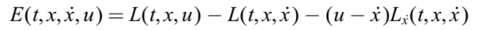

Línea del tiempo
Aunque si bien la control óptimol la podemos ubicar a más de 300 años de historia, estos son los eventos más sobresalientes para formar la teoria de control que ahora conocemos.
(1600-1700)
1638 Galileo y sus Problemas de Forma
Galileo planteó dos problemas de forma: la catenaria y la braquistócrona, los cuales se semejan a primeros problemas de control óptimo.
1662 Fermat y el principio de la luz
Fermat postuló el principio de que la luz siempre elige el camino a través de una secuencia de medios ópticos de manera que los atraviesa en un tiempo mínimo.
1685 Newton Resolviendo los Problemas de Galileo
Newton fue el primero en resolver un problema de forma (la forma de la punta de un proyectil proporcionaba un arrastre mínimo)
1696 Johann Bernoulli desafió a Matemáticos a resolver los problemas de forma.
Johann Bernoulli desafió a sus contemporáneos a resolver el problema de la braquistócrona antes de fin de año Cinco matemáticos respondieron al desafío: el hermano mayor de Johann, Jakob, Leibnitz, l'Hopital, Tschirnhaus y Newton.
1697 Bernoulli y los resultados de su desafío
Bernoulli publicó todas sus soluciones, junto con la suya propia en abril de 1697.
(1700- 1800)
1744 Euler Reglas de Máximo y Mínimo
“Nada ocurre en el universo en el que no aparece alguna regla de máximo o mínimo”, Euler formuló el problema en términos generales como uno del intervalo.
1755 Lagrange y las Variaciones
Describió un enfoque analítico, basado en perturbaciones o “variaciones” de la curva óptima y usando sus “multiplicadores indeterminados”, que conducía directamente a La condición necesaria de Euler, ahora conocida como la "ecuación de Euler-Lagrange".
Euler adoptó con entusiasmo este enfoque y renombró el tema como "cálculo de variaciones"
1786 Condición Legendre-Clebsch
Legendre quien estudió la segunda variación y produjo una condición necesaria de optimalidad de segundo orden. Clebsch lo extendió al caso vectorial y ahora se conoce como la condición de Legendre-Clebsch.
1786 Función Hamiltoniana
Mientras tanto Hamilton, a través de su “principio de mínima acción”, había ido reformulando las ecuaciones de la mecánica como un principio variacional. Esta función una función escalar donde se pueden obtenerse ecuaciones de movimiento.
 Donde:
Donde:
1800- 1900
1838 Ecuación de Hamilton-Jacobi
Jacobi demostró que podía escribirse de manera más compacta en términos se conoce como la ecuación de Hamilton-Jacob.
1838 Weierstrass y su función de exceso
Introdujo la “función de exceso”:
Caratheódory y las ecuaiones diferenciales
Caratheódory era muy consciente de la necesidad de establecer la existencia de trayectorias óptimas, y lo estableció a través de las condiciones suficientes bastante fuertes para la existencia de las soluciones requeridas de la ecuación de Hamilton-Jacobi,

Caratheódory era muy consciente de la necesidad de establecer la existencia de trayectorias óptimas, y lo estableció a través de las condiciones suficientes bastante fuertes para la existencia de las soluciones requeridas de la ecuación de Hamilton-Jacobi. , sin embargo Tonelli abordo directamente el problema de trayectorias óptimas, estableciendo una función de crecimiento:
El siguiente paso fue considerar la restricción de la clase de funciones admisibles ̇x(·) de R^n, para que también satisfagan el conjunto de ecuaciones conocidas como conjunto general de ecuaciones algebraicas diferenciales.
El problema de Lagrange
Sin embargo, se impusieron condiciones suficientes para asegurar que existan funciones:

con suficientes grados de libertad para asegurar la existencia de funciones vecinas que también satisface.
El problema resultante se conoce como problema de Lagrange, ya que se resolvió mediante el uso de multiplicadores de Lagrange,.
Esto preparó el escenario para parametrizar los grados de libertad implícitos en el problema de Lagrange al considerar restricciones de la forma:

Problema de control óptimo:

Pontryagin y su principio de máximo
Las condiciones necesarias de optimalidad para este problema fueron establecidas por Pontryagin en su famoso “principio del máximo”, que puede expresarse en la forma